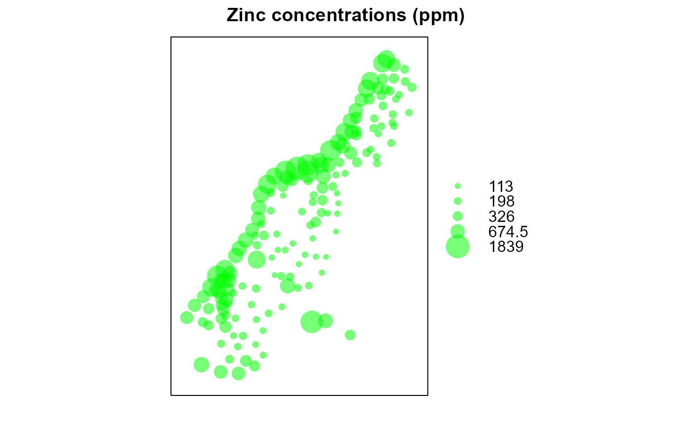
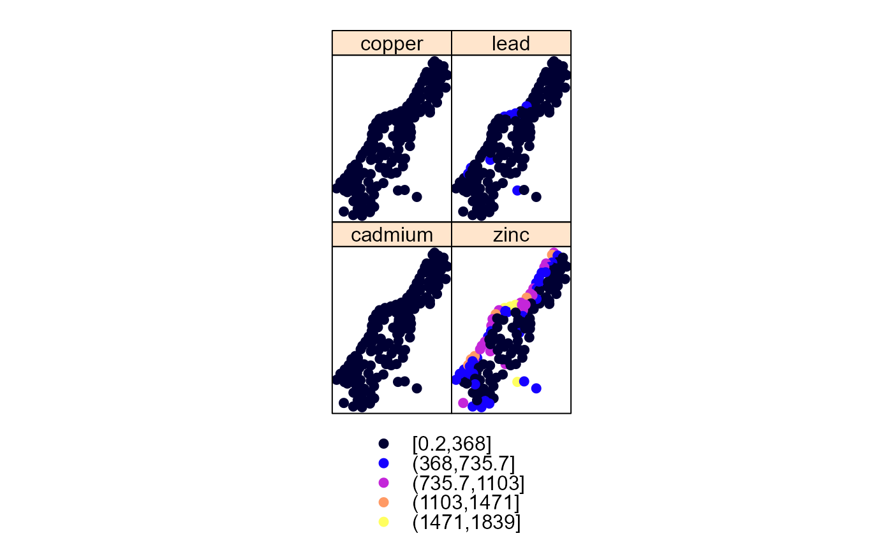

This data set provides the locations and topsoil heavy metal concentrations along with a number of soil and landscape variables at observation locations. The data were collected in a floodplain of the river Meuse, near the village of Stein in the Netherlands (NL). The heavy metal concentrations were measured from composite samples taken over an area of approximately 15 m x 15 m.
Usage
data(meuse, package = "spEnviroDistr")Format
A data frame with 155 observations on the following 15 variables:
- x
A numeric vector; Easting (m) in Rijksdriehoek (RDH), the Dutch national coordinate system.
- y
A numeric vector; Northing (m) in RDH coordinates.
- cadmium
Topsoil cadmium concentration, measured in mg/kg of soil (ppm). Zero cadmium values in the original data set have been adjusted to 0.2 ppm, which is half the lowest non-zero value.
- copper
Topsoil copper concentration, measured in mg/kg of soil (ppm).
- lead
Topsoil lead concentration, measured in mg/kg of soil (ppm).
- zinc
Topsoil zinc concentration, measured in mg/kg of soil (ppm).
- elev
Relative elevation above the local riverbed in meters.
- alt
Altitude above sea level in meters, derived from the
meuse.altdataset, which provides altitudes digitized from the 1:10,000 topographical map of the Netherlands.- dist
Distance to the Meuse River, obtained from the nearest cell in the
meuse.griddataset, which was derived using a spatial distance GIS operation. The distance is normalized to a range of \([0,1]\).- om
Organic matter content, measured as a percentage (kg per 100 kg of soil).
- ffreq
Flooding frequency class: "1" indicates flooding once in two years; "2" indicates flooding once in ten years; "3" indicates flooding once in 50 years.
- soil
Soil type according to the 1:50,000 soil map of the Netherlands. "1" corresponds to Rd10A (Calcareous weakly-developed meadow soils, light sandy clay); "2" corresponds to Rd90C/VII (Non-calcareous weakly-developed meadow soils, heavy sandy clay to light clay); "3" corresponds to Bkd26/VII (Red Brick soil, fine-sandy, silty light clay).
- lime
Lime presence: 0 = absent, 1 = present, as determined by a field test using 5% HCl.
- landuse
Land use classification: "Aa" = Agriculture/unspecified, "Ab" = Agriculture/sugar beets, "Ag" = Agriculture/small grains, "Ah" = Agriculture/other, "Am" = Agriculture/maize, "B" = woods, "Bw" = trees in pasture, "DEN" = other, "Fh" = tall fruit trees, "Fl" = low fruit trees, "Fw" = fruit trees in pasture, "Ga" = home gardens, "SPO" = sport field, "STA" = stable yard, "Tv" = other, "W" = pasture.
- dist.m
Distance to the Meuse River in meters, as measured during the field survey.
Details
The soil units were mapped with a minimum delineation width of 150 m, which means that the landscape is somewhat generalized. The data provides a valuable resource for understanding the distribution of heavy metals in the topsoil of the floodplain, and is often used in geostatistical analyses and environmental modeling.
References
M G J Rikken and R P G Van Rijn, 1993. Soil pollution with heavy metals - an inquiry into spatial variation, cost of mapping and the risk evaluation of copper, cadmium, lead and zinc in the floodplains of the Meuse west of Stein, the Netherlands. Doctoraalveldwerkverslag, Dept. of Physical Geography, Utrecht University.
P.A. Burrough, R.A. McDonnell, 1998. Principles of Geographical Information Systems. Oxford University Press.
Stichting voor Bodemkartering (STIBOKA), 1970. Bodemkaart van Nederland: Blad 59 Peer, Blad 60 West en 60 Oost Sittard: schaal 1:50 000. Wageningen, STIBOKA.
Examples
data(meuse, package = "spEnviroDistr")
summary(meuse)
#> x y cadmium copper
#> Min. :178605 Min. :329714 Min. : 0.200 Min. : 14.00
#> 1st Qu.:179371 1st Qu.:330762 1st Qu.: 0.800 1st Qu.: 23.00
#> Median :179991 Median :331633 Median : 2.100 Median : 31.00
#> Mean :180005 Mean :331635 Mean : 3.246 Mean : 40.32
#> 3rd Qu.:180630 3rd Qu.:332463 3rd Qu.: 3.850 3rd Qu.: 49.50
#> Max. :181390 Max. :333611 Max. :18.100 Max. :128.00
#>
#> lead zinc elev alt
#> Min. : 37.0 Min. : 113.0 Min. : 5.180 Min. :32.29
#> 1st Qu.: 72.5 1st Qu.: 198.0 1st Qu.: 7.546 1st Qu.:35.49
#> Median :123.0 Median : 326.0 Median : 8.180 Median :36.61
#> Mean :153.4 Mean : 469.7 Mean : 8.165 Mean :36.45
#> 3rd Qu.:207.0 3rd Qu.: 674.5 3rd Qu.: 8.955 3rd Qu.:37.42
#> Max. :654.0 Max. :1839.0 Max. :10.520 Max. :41.66
#>
#> dist om ffreq soil lime landuse
#> Min. :0.00000 Min. : 1.000 1:84 1:97 0:111 W :50
#> 1st Qu.:0.07569 1st Qu.: 5.300 2:48 2:46 1: 44 Ah :39
#> Median :0.21184 Median : 6.900 3:23 3:12 Am :22
#> Mean :0.24002 Mean : 7.478 Fw :10
#> 3rd Qu.:0.36407 3rd Qu.: 9.000 Ab : 8
#> Max. :0.88039 Max. :17.000 (Other):25
#> NA's :2 NA's : 1
#> dist.m
#> Min. : 10.0
#> 1st Qu.: 80.0
#> Median : 270.0
#> Mean : 290.3
#> 3rd Qu.: 450.0
#> Max. :1000.0
#>
coordinates(meuse) <- ~x+y
proj4string(meuse) <- CRS("+init=epsg:28992")
bubble(meuse, "zinc", col = c("#00ff0088", "#00ff0088"), main = "Zinc concentrations (ppm)")

spplot(meuse, c("cadmium", "zinc", "copper", "lead"))
